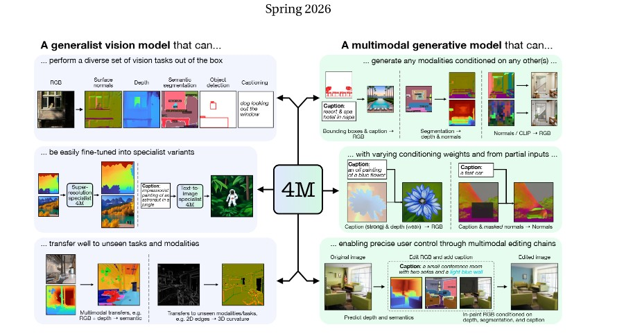
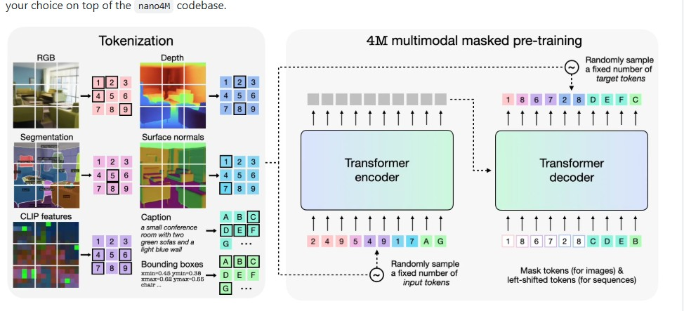

FourM Encoder-Decoder
Width 512, 6 encoder and 6 decoder layers, 64-dim attention heads. Encoder ingests visible tokens; decoder predicts hidden tokens via cross-attention.
A minimal implementation of 4M — massively multimodal masked modeling at nano scale.
nano4M is a compact educational implementation of 4M (Massively Multimodal Masked Modeling), inspired by nanoGPT. It is trained on several aligned modalities of the same scene — RGB images, depth maps, surface normals, and scene descriptions — and learns to reconstruct hidden target tokens from visible input tokens. Because any modality can be input or target, the model learns many conditional generation directions simultaneously: text from images, images from text, depth from RGB, and so on.
Width 512, 6 encoder and 6 decoder layers, 64-dim attention heads. Encoder ingests visible tokens; decoder predicts hidden tokens via cross-attention.
tok_rgb@256, tok_depth@256, tok_normal@256 (each a 16x16 grid of 256 tokens), and scene_desc (GPT-2 tokenized caption, max 256 tokens).
Each sample has input and target tokens drawn from a Dirichlet budget. The model predicts target tokens using a cross-entropy loss averaged per modality.

The training pipeline follows three steps: (1) for each sample, draw input and target token counts; (2) split the budget across modalities using a symmetric Dirichlet distribution; (3) sample target positions per modality, then sample encoder inputs from the remaining positions. This guarantees encoder and decoder positions are disjoint per modality.

16x16 grid of 256 discrete tokens. Vocabulary size 64,000. Encoded with the Cosmos tokenizer.
16x16 grid of 256 discrete tokens representing per-pixel depth. Same vocabulary and tokenizer as RGB.
16x16 grid of 256 discrete tokens encoding surface orientation at each pixel.
GPT-2 tokenized structured caption. Max length 256 tokens. Vocabulary size 50,304.
nano4M is trained with a cross-entropy loss over target tokens. With per_modality_loss_avg enabled, the loss is averaged per modality so that a modality with many target tokens cannot dominate. The model is trained on MultiCLEVR with AdamW (β=(0.9, 0.95), weight decay 0.05, gradient clip 1.0), a cosine schedule with 500M-token warmup, peak learning rate 6x10^-4, and bf16 precision.
In this project, we extend nano4M by replacing the default random masking with structured masking strategies that respect modality structure. We implement span masking for text, block masking for image tokens, and mixed strategies — keeping the architecture, dataset, and compute budget fixed so that masking is the only independent variable.